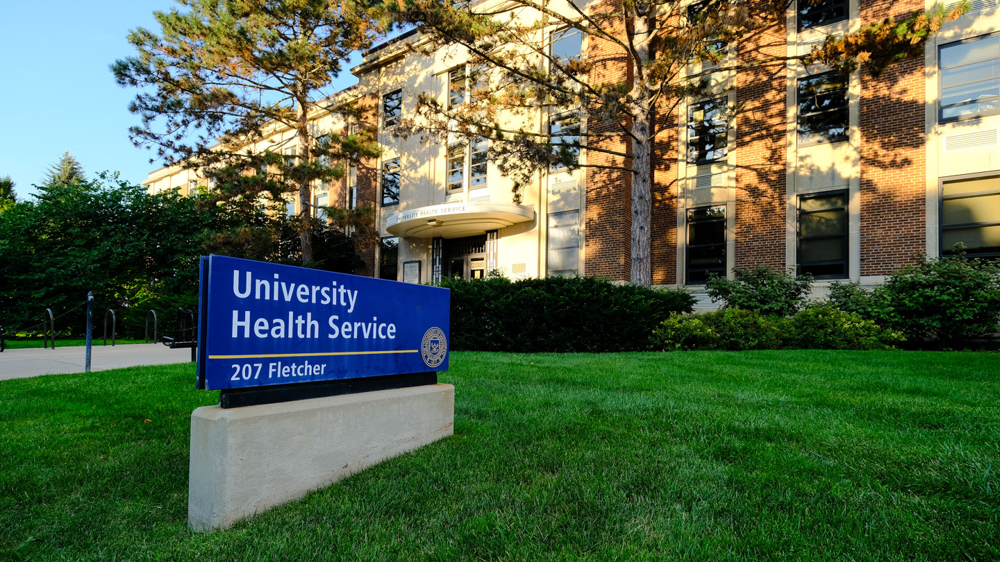

University Health Service (UHS)
Access comprehensive medical care, including routine check-ups, vaccinations, and specialist referrals.

Your Comprehensive Guide to Resources for Graduate School Success
This guide is set up to help you be successful inside and outside of the classroom. We have included the following resources throughout our site:
Keeping your body healthy is essential for success. The University of Michigan offers numerous resources to help you stay in top physical condition:
Access comprehensive medical care, including routine check-ups, vaccinations, and specialist referrals.
Participate in various fitness programs, sports clubs, and use of gym facilities to stay active and healthy.
Maintaining your mental well-being is crucial for thriving in graduate school. Here are resources to support your mental health:
Access individual counseling, group therapy, workshops, and crisis intervention services.
Work with a wellness coach to develop strategies for managing stress, time, and overall well-being.
Participate in mindfulness and meditation sessions to cultivate a calm and focused mind.
Join peer support groups for shared experiences and collective coping strategies.
Graduate school is more than just academics. It's important to cultivate a balanced life. Here are some resources to help you enjoy life outside the classroom: